Batch-3 positives + augmentation retrain
Date: 2026-07-10 · Data: 856 originals
(80 positives incl. 24 new batch-3 captures), 140 RealBlur
train negatives, 2988 augmented variants · Eval: 5-fold grouped+stratified
OOF CV × 3 seeds, augs follow their source image's fold, metrics on originals only.
Goal
(1) Ingest the user's 24 new positives and retrain. (2) Measure whether heavy augmentation
(hflip, ±12° rotation reflect-fill, random 85–97% crops, brightness/contrast/gamma,
Gaussian noise — applied to BOTH classes) improves the detector. (3) Report ROC curves and the
concrete false positives / false negatives at the production gate (P≥0.8).
Results — three variants
| metric (mean ± sd over 3 seeds) | base (856) |
+RealBlur | +RealBlur+aug |
|---|
| scene PR-AUC (headline) | 0.9033 ± 0.0078 | 0.9066 ± 0.0061 | 0.8994 ± 0.0054 |
| scene ROC-AUC | 0.9855 ± 0.0014 | 0.9840 ± 0.0015 | 0.9821 ± 0.0006 |
| image PR-AUC | 0.9186 ± 0.0061 | 0.9161 ± 0.0039 | 0.9138 ± 0.0009 |
| image ROC-AUC | 0.9884 ± 0.0014 | 0.9854 ± 0.0024 | 0.9850 ± 0.0016 |
Best variant: rb. Candidate artifact
D:\occlusion_dataset\clip_b32_gmax_v3aug.npz (full fit on best variant;
NOT promoted to production). RealBlur holdout with candidate:
0/282 over gate
(max 0.35). In-sample positive recall at gate:
75/80.
ROC curves (out-of-fold, seed 0)
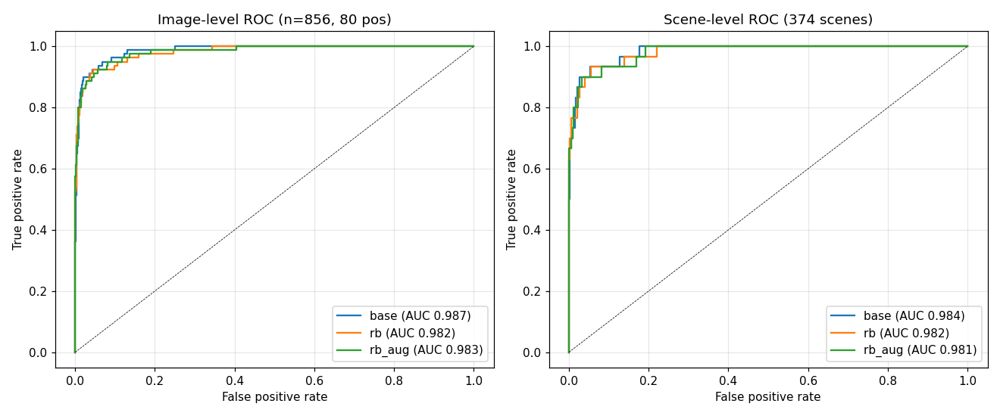
False positives (OOF P ≥ 0.5; 2 of them cross the 0.8 gate)
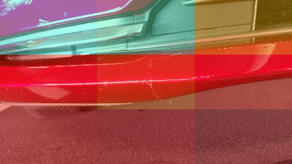
austria24__20230818_112656.jpg
OOF P=0.87
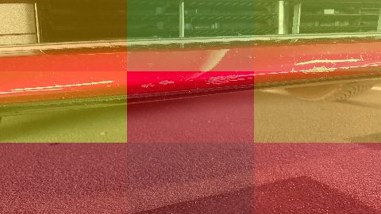
austria24__20230818_112650.jpg
OOF P=0.86
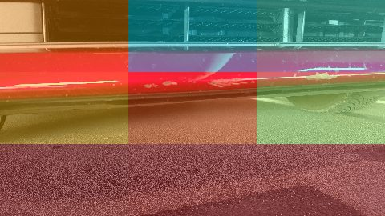
austria24__20230818_112645.jpg
OOF P=0.78
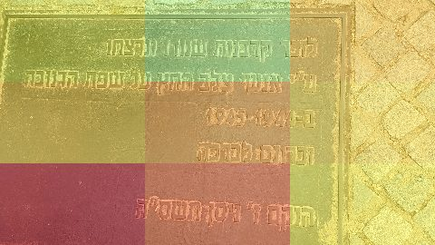
budapest__20250822_125441.jpg
OOF P=0.74
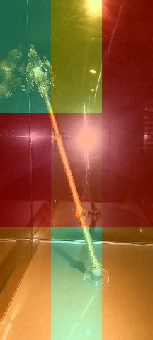
germany1__20240818_124425.heic
OOF P=0.68
budapest__20250824_152628.jpg
OOF P=0.67
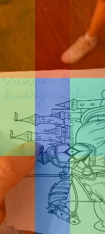
germany1__20240818_134314.heic
OOF P=0.64
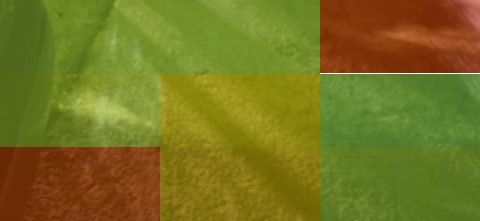
occl__20260705_214913.jpg
OOF P=0.62
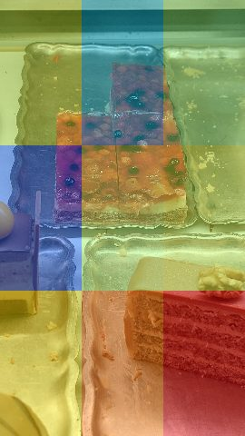
austria24__20230823_163247.jpg
OOF P=0.62
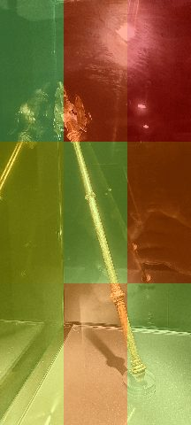
germany1__20240818_124436.heic
OOF P=0.58
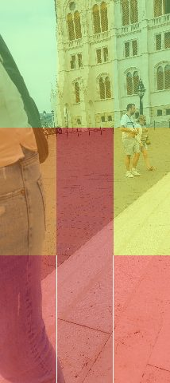
budapest__20250822_123518.jpg
OOF P=0.56
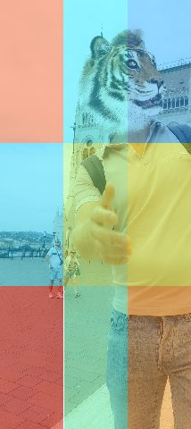
budapest__20250822_123514.jpg
OOF P=0.50
False negatives — occluded but under the gate (32/80, sorted worst-first)
Expected per the user: minor occlusions may be missed, and that is acceptable —
the gallery shows WHICH positives are missed so the trade-off is explicit.
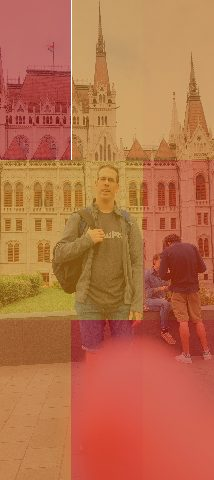
budapest__20250822_122626.jpg
OOF P=0.02
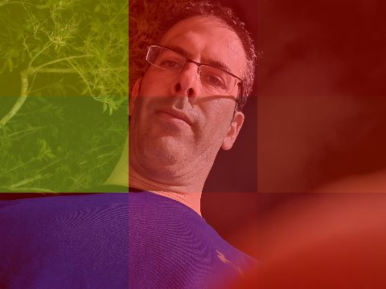
occl__20260705_215004.jpg
OOF P=0.04
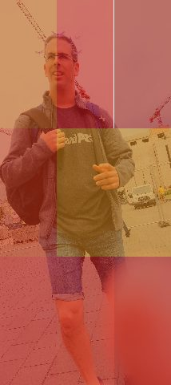
budapest__20250822_122617.jpg
OOF P=0.06
occl__20260705_214956.jpg
OOF P=0.08
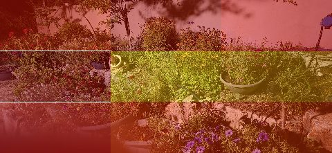
occl__20260705_214949.jpg
OOF P=0.10
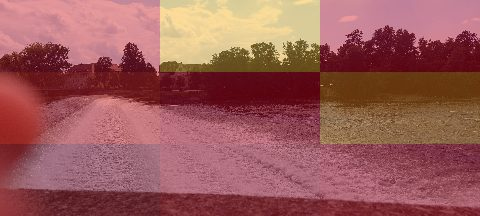
germany1__20240816_151011.heic
OOF P=0.11
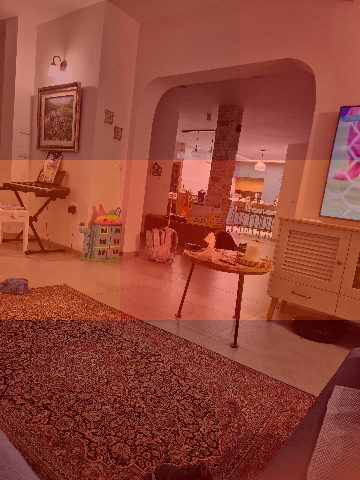
occl__20260628_225015.jpg
OOF P=0.24
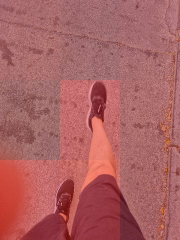
occl__20260628_182631.jpg
OOF P=0.32
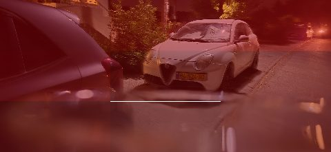
occl__20260705_214853.jpg
OOF P=0.34
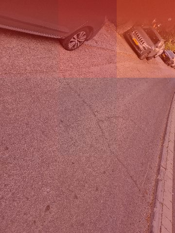
occl__20260628_182539.jpg
OOF P=0.39
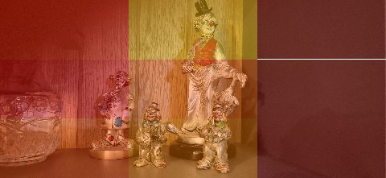
occl__20260705_215415.jpg
OOF P=0.41
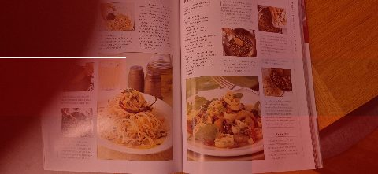
occl__20260705_215539.jpg
OOF P=0.45
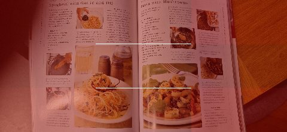
occl__20260705_215537.jpg
OOF P=0.49
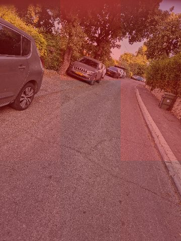
occl__20260628_182535.jpg
OOF P=0.53
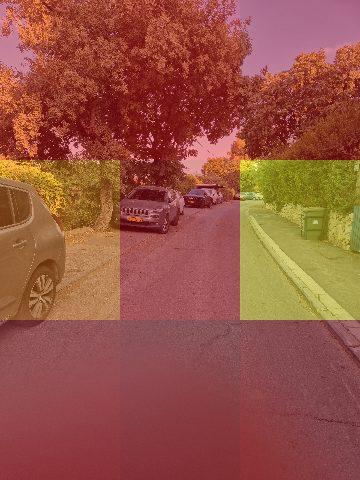
occl__20260628_182527.jpg
OOF P=0.54
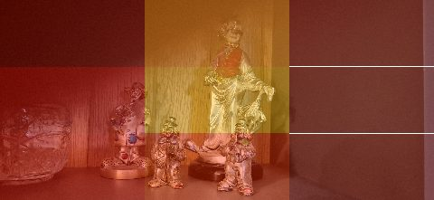
occl__20260705_215419.jpg
OOF P=0.56
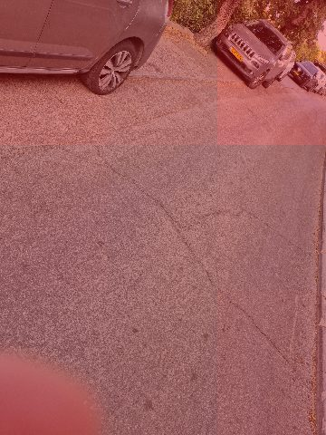
occl__20260628_182548.jpg
OOF P=0.58
occl__20260628_182629.jpg
OOF P=0.59
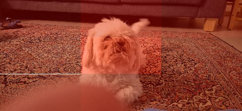
occl__20260705_215111.jpg
OOF P=0.63
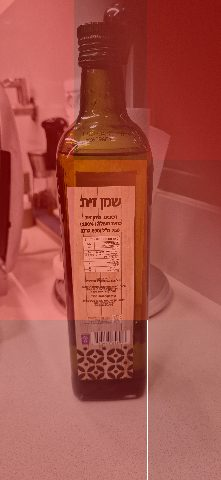
occl__20260705_215438.jpg
OOF P=0.63
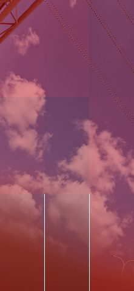
occl__20260709_165845.jpg
OOF P=0.67
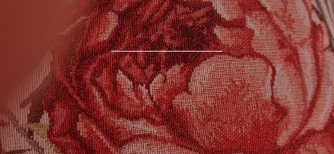
occl__20260710_091947.jpg
OOF P=0.69
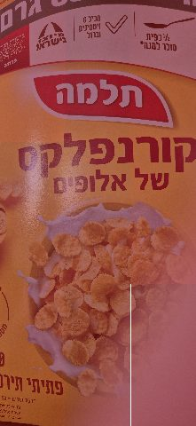
occl__20260710_092203.jpg
OOF P=0.71
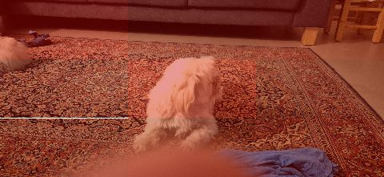
occl__20260705_215107.jpg
OOF P=0.75
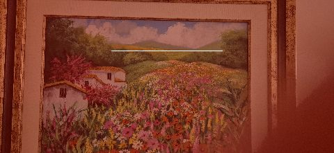
occl__20260705_215249.jpg
OOF P=0.76
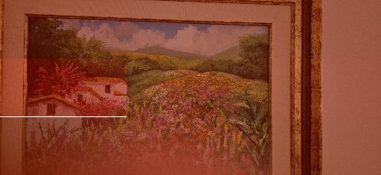
occl__20260705_215229.jpg
OOF P=0.76
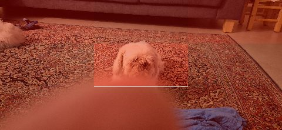
occl__20260705_215104.jpg
OOF P=0.76
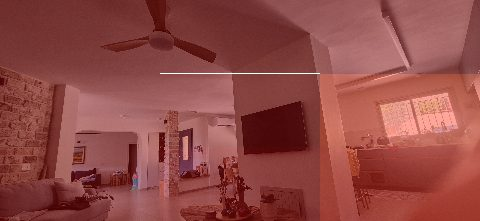
occl__20260710_091847.jpg
OOF P=0.77
occl__20260705_215508.jpg
OOF P=0.77
occl__20260705_215512.jpg
OOF P=0.77
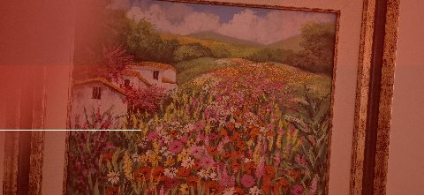
occl__20260705_215235.jpg
OOF P=0.78
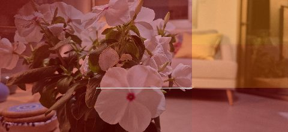
occl__20260705_215401.jpg
OOF P=0.78
Augmentation samples (what the model was trained on)
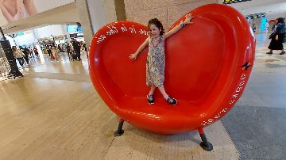
negative aug
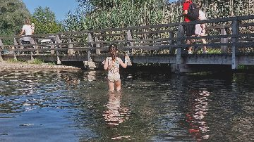
negative aug
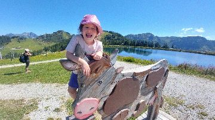
negative aug
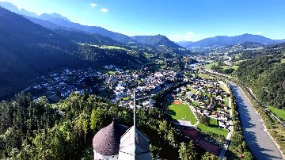
negative aug
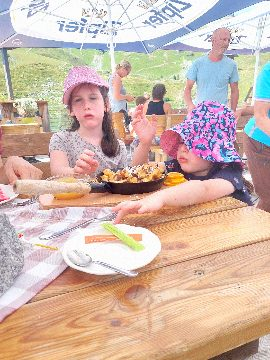
negative aug
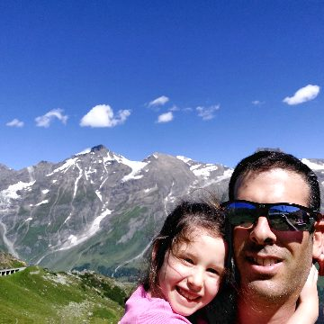
negative aug
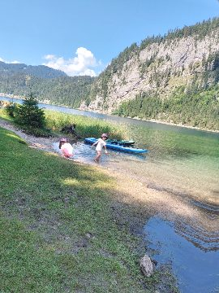
negative aug
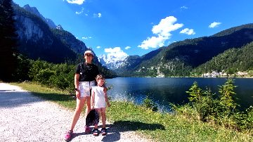
negative aug
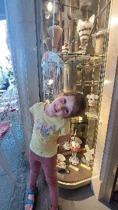
negative aug
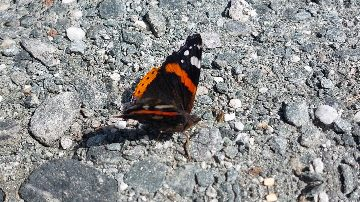
negative aug
Full augmented set was embedded in-memory (embeddings:
D:\occlusion_dataset\aug_embeddings.npz); these samples are the visual record.
Verdict: the 24 new positives are the story — scene PR-AUC
0.777 → ~0.90 (same fold procedure as yesterday's 0.86-benchmarked model).
Augmentation is a null result: 0.8994 ± 0.0054 vs
0.9066 ± 0.0061 without — CLIP embeddings are already largely
invariant to flips/rotations/lighting, so augmented copies add near-zero new information.
RealBlur negatives remain worth keeping (real-shake false alarms stay at zero, benchmark cost nil).
Caveats: (1) FP/FN lists are OOF seed-0 at image level — counts vary
±a few images across seeds. (2) Random crops on positives can cut corner occluders out of
frame (kept ≥85% area to limit label noise). (3) In-sample recall (75/80)
> OOF recall (48/80) — the honest number is OOF.
Reproduce
scripts/ingest_positive_batch.py → scripts/experiment_augment_embed.py
→ scripts/experiment_augmented_retrain.py → this report:
scripts/experiment_augmented_report.py